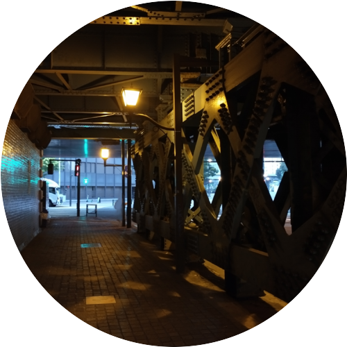

About

Hama
関西在住の高専4年生です。メカトロ系の学科に在籍しています。デザインにも少し興味があります。
Works
Fusion360を用いたモデリング
Fusion360を活用し、ドライバーのデザインを行いました。海外製品のような怪しい日本語がポイント。
kicadを用いた基板設計
kicadを活用して基盤を設計しました。特撮玩具をイメージした見た目だけのデザインです。
blenderを用いた動画制作
基礎研究に向けて、ロボットアームのモデルを使用し、blenderで動画を作成しました。
ポスターと注文用ページ
基礎研究に向けて制作したポスターと注文用ページです。基礎研究では観覧車アームの発案からポスターや動画等の制作、ホームページ制作を行いました。

Skills
授業やクラブ活動、文化祭活動、趣味を含めて利用経験のあるハードウェアやソフトウェアの一覧です。
- Fusion 360（3D-CAD）
- 汎用旋盤
- ボール盤
- フライス盤
- Arduino
- 電子工作（ブレッドボード）
- Python
- AviUtl（動画編集ソフト）
- Blender
- KiCad